İlk gün
Yeni bir dünyaya elleriniz boş düşersiniz. Önünüzde yirmi dakikalık bir gün var ve bunun yarısı gece. Acele etmeyin ama oyalanmayın da.
İlk iş bir ağaç bulup sol tıkı basılı tutarak kütük toplamak. Beş altı kütük şimdilik yeter.
İlk alet zinciri
6Kütük→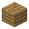
4Kalas→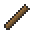
4Çubuk→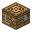
Üretim Masası→Tahta Kazma→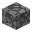
3Parke Taş→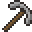
Taş KazmaQ ile envanteri açın. Kütükten kalas, kalastan çubuk ve Üretim Masası yapılır. Masayı yere koyun; yanındayken daha fazla tarif açılır. Tahta kazma ile taş kırmaya başlayın, birkaç parke taşı toplayınca hemen taş kazmaya geçin.
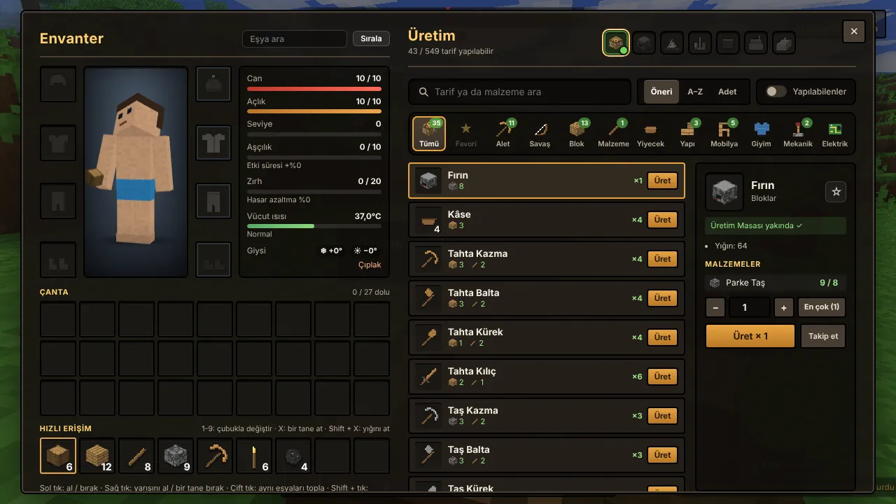
İlk gece
Güneş ufka değmeden şu dört şeyi halletmiş olun:
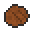
Bir miktar yiyecek. Hayvan avlayıp eti kamp ateşinde pişirin. Çiğ et de olur ama pişmiş çok daha fazla doyurur. Meşale. Kömür ya da odun kömürü ile çubuktan yapılır. Canavarlar aydınlık yerde doğmaz. Elinizde tutarken de çevrenizi aydınlatır; mağarada uzağı görmek için ileride iki bakır külçe, bir cam ve bir parıltı kristalinden El Feneri yapabilirsiniz.
Meşale. Kömür ya da odun kömürü ile çubuktan yapılır. Canavarlar aydınlık yerde doğmaz. Elinizde tutarken de çevrenizi aydınlatır; mağarada uzağı görmek için ileride iki bakır külçe, bir cam ve bir parıltı kristalinden El Feneri yapabilirsiniz.- Dört duvarı ve kapısı olan bir yer. Toprak bile olur. Canavarlar kapalı kapının arkasından size vuramaz.
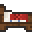
Mümkünse bir yatak. Yün için koyun bulmanız lazım. Yatakta uyuyunca gece geçer ve orası doğma noktanız olur.
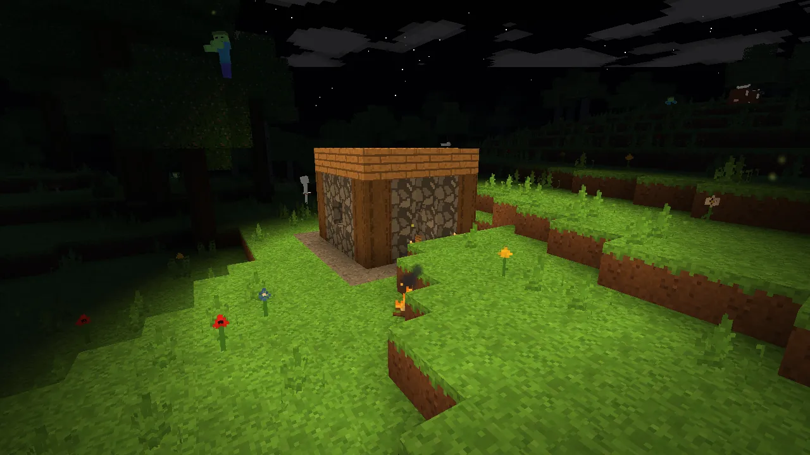
Yatak yoksa ölünce rastgele, güvenli bir yerde doğarsınız. Bu da bazen evinizden yüzlerce blok uzakta uyanmak demek. İlk fırsatta yatak yapın.
Yolculuk
Nereden başlayacağınızı bilemiyorsanız J ile açılan günlükteki Yolculuk sekmesine bakın. Oyun, ilk kütükten Yeraltı Diyarı'na kadar sekiz bölüme ayrılmış durumda; her bölüm birkaç adımdan oluşuyor ve bitince ödül veriyor. Sıradaki adım ekranın sağında da yazıyor.
Kontroller
Aşağıdakiler varsayılan tuşlar. Hepsini Ayarlar > Kontroller bölümünden değiştirebilirsiniz. Esc ve 1-9 sabit.
| Tuş | Ne yapar |
|---|---|
| W A S D | Yürü |
| Boşluk | Zıpla, suda yukarı yüz |
| Sol Shift | Koş |
| C | Eğil; tekneden ya da binekten in; suda dal |
| Sol tık | Kaz, vur |
| Sağ tık | Blok koy, kullan, ye, yay ger; elde silah varsa savun |
| S, A, D iki kez | O yöne atıl (kısa bir an saldırılardan kaçarsınız) |
| E | Kapı, sandık, köylü, istasyon, yatak gibi şeylerle etkileşim |
| G | Elindekini yere at |
| R | Yerleştirmeden önce bloğu döndür (yatak, merdiven, cihazlar) |
| 1-9, tekerlek | Hızlı erişim yuvası seç |
| Q | Envanter ve üretim |
| B | Tarif Kitabı |
| M | Büyük harita |
| J | Görev günlüğü |
| L | Başarımlar |
| T | Sohbet (çok oyunculu) |
| Tab | Oyuncu listesi ve katılım kodu (basılı tutun) |
| F1 | Fotoğraf modu, göstergeleri gizler |
| F2 | Ekran görüntüsü |
| F3 | Konum, biyom, kare hızı gibi bilgiler |
| F8 | Geliştirici konsolu (dünya ayarlarında açıksa) |
| Esc | Duraklat, pencereyi kapat |
Envanterde eşyayı tıklayıp alıp başka bir yuvaya tıklayarak bırakabilir ya da sürükleyip bırakabilirsiniz. Shift + tık eşyayı hızlıca sandığa ya da hızlı erişim çubuğuna taşır. Üretim penceresinde Üret düğmesine Shift ile basarsanız malzemeniz yettiği kadar üretir. Bir tarifte eksik malzeme varsa altında nereden bulunacağı yazar.
Oyun kumandası
Kumanda takılıysa bir tuşuna basmanız yeterli. Sol çubuk yürür (sonuna kadar itince ya da çubuğa basınca koşarsınız), sağ çubuk bakar. A zıplar, B eğilir, X etkileşim, Y envanter. RT kazar ve vurur, LT koyar ve kullanır. LB ve RB eşya seçer. Başlat duraklatır, Geri haritayı açar. Menülerde ve pencerelerde ekranda bir imleç çıkar: sol çubukla sürüp A ile tıklarsınız, B geri döner.
Hayatta kalmak
Açlık
Koşmak, zıplamak, kazmak, savaşmak açlığı daha hızlı düşürür. Açlık göstergesi doluyken can yavaş yavaş yenilenir. Tamamen boşalırsa can gitmeye başlar. Çürük et ve bazı çiğ yiyecekler mide bulandırabilir, mecbur kalmadıkça yemeyin.
Köylerde ve mutfakta yapılan yemekler ayrıca kısa süreli etki verir. Mesela Maden Gücü kazmayı hızlandırır, Hafiflik düşme hasarını yarıya indirir. Uzun bir maden turuna çıkmadan önce bir tabak bir şey yemek fena fikir değil.
Vücut ısısı
Dünyayı oluştururken vücut ısısını açtıysanız sağ altta sıcaklığınız görünür. Normal aralık 36 ile 38 °C arası. Bunun altına inerseniz üşürsünüz, üstüne çıkarsanız bunalırsınız; ikisi de uzarsa can götürür.
- Hissedilen sıcaklığı biyom, mevsim, saat, yükseklik ve yağış belirler. Islak giysiyle rüzgârda kalmak hiç iyi değil.
- Çölde gündüz kavrulursunuz ama gece bir anda soğur.
- Kamp ateşi, meşale, şömine, lav ve fener yakınında ısınırsınız. Buz ve buz feneri serinletir.
- Kıyafetler ve zırhlar soğuğa karşı korur. Bazı hafif kıyafetler sıcakta serinletir.
Düşme
Üç bloğa kadar sorun yok. Sonrası hızla artıyor: 6 blok yaklaşık iki buçuk kalp, 10 blok yedi kalp götürür. 12 bloktan düşmek tam canlı bir oyuncuyu öldürür. 7 bloktan yüksekten düşünce bacağınız kırılabilir ve bir süre topallarsınız.
Suya düşmek hasarsız. Yün, saman balyası, yatak ve minder hasarın çoğunu, yapraklar yarısını emer.
Ölünce ne olur
Eşyalarınız etrafa saçılmaz, öldüğünüz yere bir mezar taşı konur ve hepsi onun içinde durur. Geri dönüp alabilirsiniz. Lavda ya da suda öldüyseniz mezar en yakın güvenli yere konur.
Ölüm ekranında iki seçenek var: son kullandığınız yatakta doğmak ya da rastgele bir yerde yeniden başlamak. Hardcore dünyalarda tek can var; ölünce dünya biter ve sadece izleyebilirsiniz.
Zorluklar
| Zorluk | Farkı |
|---|---|
| Kolay | Canavarlar az ve zayıf, açlık yavaş, ısı can götürmez |
| Normal | Oyunun düşünüldüğü hâli |
| Zor | Canavarlar kalabalık ve sert vurur, açlık hızlı, yaralanmak kolay |
| Hardcore | Zor ile aynı, ama tek can |
Zorluk, Kanlı Ay sıklığı, meteorlar ve vücut ısısı dünya oluşturulurken seçilir, sonradan değişmez.
Madencilik ve aletler
Yüzeyde ne kadar oyalanırsanız oyalanın, iyi şeyler aşağıda. Ve aşağısı karanlık.
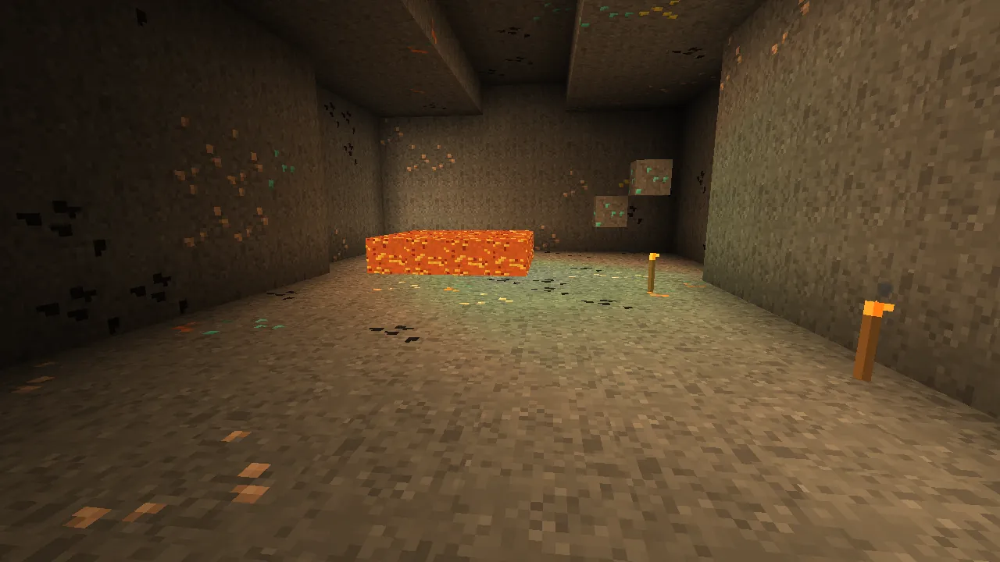
Aletlerin sırası şöyle: tahta, taş, bakır, demir, elmas ve en sonda obsidyen. Bir cevheri kırmak için en az bir alt seviyedeki kazma gerekir. Taş kazma ile demir çıkar ama elmas çıkmaz.
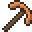
›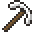
›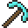
›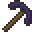
Cevherlerin bulunduğu yükseklikler aşağıda. Yüksekliğinizi F3 ile görebilirsiniz; deniz seviyesi 48.
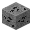
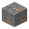
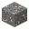
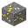
Bazı bölgelerde mağara duvarlarında kalın damarlar görürsünüz. Demir genelde koyu bazaltla, bakır granitle birlikte uzanır. Böyle bir duvar bulduysanız bir süre orada kalmaya değer.
Kum, çakıl ve kızıl kum altı boşalınca düşer. Tavanı kumlu bir mağarada altını kazarken kafanıza düşebilir.
Dünya ve biyomlar
Her dünya bir tohumdan üretilir. Aynı tohumu giren herkes aynı kıtayı görür, bu yüzden güzel bir dünya bulduğunuzda tohumunu not edin. Kıta denizle çevrili ve çapı 8000 bloğa yakın. Dünyanın bir sınırı var, oraya kadar gitmeniz pek olası değil.
Biyomlar iklime göre dizilir. Çöl ile karlı ova yan yana gelmez, arada her zaman ılıman bir kuşak vardır. Başlıcaları:
- Ilıman: Çayır, Çiçekli Çayır, Orman, Sık Orman, Huş Ormanı, Sonbahar Ormanı, Bataklık
- Soğuk: Tayga, Karlı Ova, Karlı Zirveler, Karlı Kumsal
- Sıcak: Çöl, Savan, Kızıl Kayalıklar, Mangrov
- Engebeli: Dağlar, Kayalık Tepeler, Yalıyar
- Su: Okyanus, Derin Okyanus, Nehir, Göl, Kumsal, Taşlı Kıyı, Mantar Adası
Mevsimler de araziyi değiştirir. Yıl 28 gün; her mevsim 7 gün sürüyor. Kışın çöl ve savan dışında kar yağar, göller donar. Yazın gündüzler uzun, kışın kısa.
Hava bölgeseldir. Yağmur bulutları rüzgârla sürüklenir; ıslanmak istemiyorsanız yağmurun dışına yürüyebilirsiniz. Bazı gecelerde gökyüzü kızarır, buna Kanlı Ay deniyor. O gece canavarlar çok daha kalabalık olur.

Üçüncü günden sonra başka sürprizler de var. Sisli gecelerde canavarlar kalabalıktır ama sizi ancak yakından görür. Sakin gecelerde neredeyse kimse çıkmaz. Bazı geceler de gökten yıldızlar düşer; düştükleri yerde değerli bir taş bulunur. Günler ilerledikçe zırhlı, çelik renkli canavarlar da görürsünüz: daha sert vururlar ama daha iyi ganimet bırakırlar.
Canlılar
Zararsızlar
İnek, koyun, domuz, tavuk, tavşan, at, arı ve denizde hamsi, çipura, ahtapot. Kurtlar siz bulaşmadıkça zararsız ama birine vurursanız sürü hâlinde gelir.
- Köpek: Kurda kemik verin. Her denemede yaklaşık üçte bir şansla evcilleşir, size saldıranlara saldırır.
- Kedi: Çayır ve ormanlarda seyrek görülür. Balıkla evcilleşir.
- At: Binilebilir. Uzun yolculukta çok vakit kazandırır.
Evcil hayvanınıza E ile bastığınızda oturur ya da kalkar.
Canavarlar
| Canavar | Nerede | Bilmeniz gereken |
|---|---|---|
| Zombi | Gece yüzeyde, her zaman karanlık mağarada | Gündüz güneşte yanar |
| İskelet | Gece ve mağaralar | Uzaktan ok atar, siper alın |
| Mağara Örümceği | Mağaralar | Duvara tırmanır, zehirler. Aydınlıkta saldırmaz |
| Mumya | Çöl ve savan | Güneşte yanmaz, vuruşu acıktırır |
| Boğulmuş Zombi | Gece derin suların dibi | Suda hızlı |
| Buz İskeleti | Karlı bölgeler | Okları yavaşlatır |
| Yarasa | Mağaralar | Daha çok rahatsız edici |
| Haydut | Haydut Kampı çevresi | Gruplar hâlinde gezer |
| Köpekbalığı | Açık deniz | Sudaki oyuncuya saldırır, teknedeyken güvendesiniz |
| Kor Ruhu, Kül Zombisi | Yeraltı Diyarı | Ateşe dayanıklı |
Görülmemek ve duyulmamak
Canavarlar sizi ya görerek ya da duyarak fark eder. Duvarın arkasında eğilerek yürürseniz büyük ihtimalle yanınızdan geçip giderler. Koşmak, kazmak ve dövüşmek ise uzaktan duyulur. Sizi fark eden canavar bir süre peşinizi bırakmaz, sizi kaybederse en son gördüğü yere gider.
Canavarlar yol bulur: duvarın etrafından dolanır, basamakları çıkar. Kapalı bir kapıdan geçemezler, o yüzden kapısı olan bir sığınak gerçekten işe yarar. Birkaç zombi birden gelirse sizi farklı yönlerden sarmaya çalışır; sırtınızı bir duvara vermek iyi bir fikir.
Dövüş
Her silahın kendi temposu var. Kılıç dengeli ve yerdeyken yanındaki düşmanlara da hafifçe değer. Hançer çok hızlıdır; sizi fark etmemiş ya da arkası dönük bir canavara iki kat vurur. Mızrak uzaktan erişir ama yavaştır. Savaş çekici en yavaşı ama hedefin çevresindekileri de sarsar. Düşerken vurursanız kritik vuruş olur.
| Silah | Vuruş arası | Erişim | Özelliği |
|---|---|---|---|
| Kılıç | 0,55 sn | 3,6 blok | Yandakilere %35 süpürme |
| Hançer | 0,38 sn | 3 blok | Arkadan ya da fark edilmeden 2 kat |
| Mızrak | 0,85 sn | 4,7 blok | Uzun erişim, güçlü itme |
| Savaş Çekici | 1,15 sn | 3,4 blok | Çevresine %50 hasar, en güçlü itme |
| Balta | 0,8 sn | 3,4 blok | Ağır vuruş |
Canavarlar vurmadan önce kollarını kaldırır. O an geri çekilebilir, iki kez geri tuşuna basıp atılabilir ya da sağ tıkı basılı tutup savunabilirsiniz. Savunma önden gelen darbelerin çoğunu keser; saldırı gelmeden hemen önce savunursanız darbeyi tamamen savuşturursunuz ve canavar bir an sersemler.
Okların ateşli ve zehirli olanları da var. Hızlı erişim çubuğuna koyduğunuz özel oklar yayla önce atılır.
Köyler ve ticaret
Kıtada dağınık hâlde onlarca köy var. Yakınınızdaki köyler mini haritada ev simgesiyle görünür. Her köyün kendine ait bir adı ve uzmanlığı vardır: tarım köyü, demirci köyü, ticaret kasabası, çoban obası, balıkçı limanı gibi. Uzmanlık, köyde hangi malların bol ve ucuz olduğunu belirler.

Takas
Köylüye E ile konuşun. Para birimi sikke. Her köylünün sınırlı takası var ve her sabah yenilenir. Çok aldığınız şey pahalanır, çok sattığınız şey için daha az sikke verilir; bu fark her sabah yarıya iner. Her köylünün bir de günün fırsatı oluyor, gözünüz olsun.
Köylüler takas yaptıkça ustalaşır: Çırak, Kalfa, Usta, Üstat. Her seviyede daha değerli mallar açılır.
Gezgin tüccar
İkinci günden sonra bazı sabahlar yakınınızda mor kaftanlı, sırtında heybesiyle bir gezgin tüccar konaklar. Bir gün kalıp yoluna devam eder. Köylerde bulunmayan ya da pahalı olan şeyler satar: meyve fidanları, tohumlar, eyer, ışıltaş, Eve Dönüş Tılsımı. Elmas, inci, yıldız parçası ve altını da köylülerden daha iyi fiyata alır, yani yolda bulduğunuz nadir şeyleri ona saklamaya değer. Stoğu sınırlıdır. Ona saldırırsanız küser ve gider.
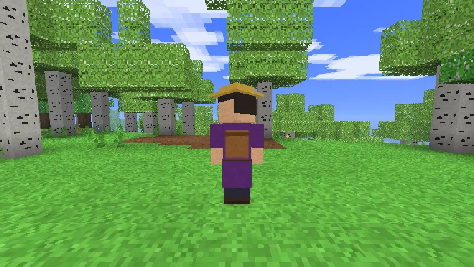
İtibar ve görevler
Köylülerin anlattığı söylentiler haritanıza soru işaretiyle düşer. Kesin yer değil, yaklaşık bir bölge; oraya varınca etrafa bakınmanız gerekir.
Ticaret ve görevlerle itibarınız artar, köylülere zarar verirseniz düşer. İtibar Güvenilmez'den Kahraman'a kadar gider. Yükseldikçe indirim alırsınız; çok düşerse köylüler sizinle konuşmaz.
Görevler getirme, avlanma ve başka köye mektup götürme gibi işler. Aynı anda en fazla üç görev alabilirsiniz, hepsi J ile açılan günlükte. Bazıları birbirine bağlı zincir görevler.
Özel yapılar ve bosslar
Her dünyada dört yapı, dört boss. Hepsi bir kez yaşar; yendiğinizde bir daha çıkmazlar. Yeterince hazırlandığınızı düşündüğünüz an, bir iksir daha alın.
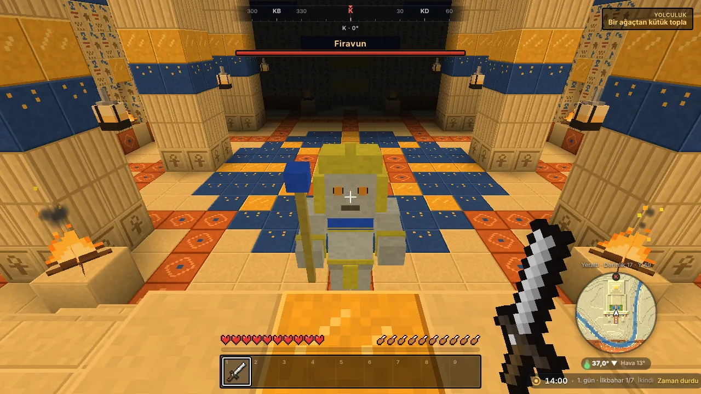
Tapınak, kule ve kamplardan her dünyada yalnızca birer tane var, köylerden uzakta, düzce bir arazide kurulurlar. Boss siz yaklaşınca uyanır ve ekranın üstünde can çubuğu çıkar. Geri itmeye dirençlidirler, canları yarıya inince hızlanırlar. Yendiğiniz boss bir daha çıkmaz.
| Yapı | Boss | Can |
|---|---|---|
| Çöl Tapınağı | Firavun | 140 |
| Buzul Kulesi | Buz Büyücüsü | 110 |
| Haydut Kampı | Haydut Reisi | 150 |
| Derin zindanlar | Taş Muhafız | 180 |
| Lanetli Ada | Kül Devi | 260 |
- Firavun sert vurur, acıktırır ve yanına mumyalar çağırır. Yanınızda yiyecek olsun.
- Buz Büyücüsü üçlü buz okuyla yavaşlatır, yaklaşınca ışınlanıp kaçar. Yayla dövüşmek daha kolay.
- Haydut Reisi uzaktan üstünüze atılır, canı yarıya inince haydutlarını çağırır.
- Taş Muhafız 30. bloğun altındaki bazı zindanlarda bekler. Yere vurduğunda çevresine hasar verir, yakın dövüşte arada bir geri çekilin.
Bosslardan efsanevi eşyalar düşer: Güneş Kılıcı, Buz Yayı, Reis Baltası, Muhafız Göğüslüğü. Orman Tapınağı'nda boss yok ama koridorları ok atıcı ve tuzak teliyle dolu. Yere bakarak yürüyün.
Daha küçük yapılar da var: mağaralardaki zindanlar (canavar yuvası ve ganimet sandıkları), okyanus dibindeki batık gemiler, kıyı köylerinin limanları ve deniz fenerleri. Canavar yuvasının çevresine meşale koyarsanız canavar çıkarmayı bırakır.
Lanetli Ada ve Yeraltı Diyarı
Haritanın en ucunda, ıssız denizin ortasında kül rengi bir ada. Oyunun en zor bölümü burası; acele etmeyin.
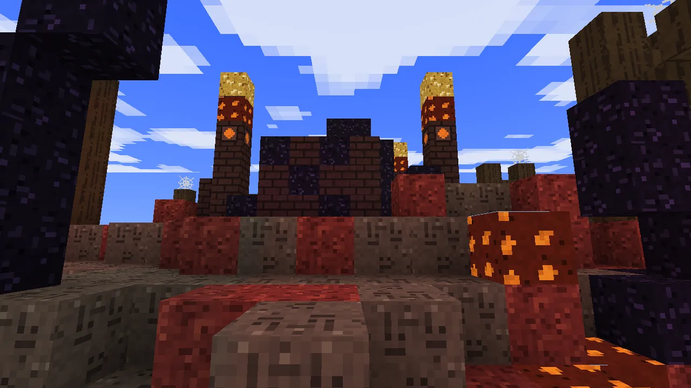
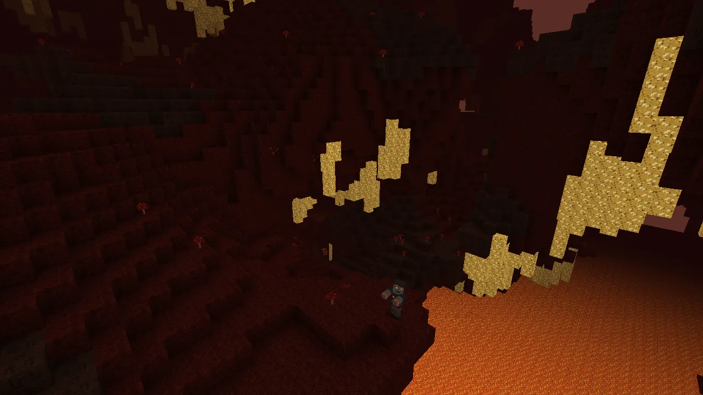
Önce iyi bir zırh, birkaç şifa iksiri ve bol yiyecek edinin.
Yanınıza alın
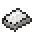
Demir zırh+3Şifa İksiri+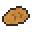
16Yiyecek+Su Kovası+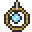
Eve Dönüş Tılsımı- Adayı bulun. Lanetli Ada kıtadan çok uzakta, ıssız açık denizde. Bir yelkenli yapın ya da bir balıkçı köylüsünden alın. Obsidyen yarlarından ve kül rengi kıyısından tanırsınız.
- Kül Devi'ni yenin. Adanın bekçisi üç blok boyunda, 260 canlı, ateşe bağışık bir dev. Yere vurmadan önce etrafında bir halka belirir; hemen o halkadan çıkın. Magma yağdırır, kül fırtınasıyla sizi kendine çeker, canı yarıya inince yanına kül zombileri çağırır. Ateşle ona zarar veremezsiniz. Adadan ayrılamaz, işler kötüye giderse denize atlayın.
- Anahtarları alın. Kül Devi ölünce iki adet tek kullanımlık Büyülü Anahtar bırakır. Yenisi ancak yarım saat sonra doğar.
- Geçidi açın. Anahtarla geçide sağ tıklayın. Geçidin içinden geçince Yeraltı Diyarı'na inersiniz.
Diyar sıcak, kızıl, lav dolu bir yer. Kor Ruhları ateş topu atar, Kül Zombileri lavın içinde bile yüzebilir. Hissedilen sıcaklık 40 °C civarında, vücut ısısı açıksa serinletici bir şey yanınıza alın. Dönüş için ikinci anahtarı saklayın.
Tarım ve mutfak
Avlanmak heyecanlı ama her gün tavşan kovalamak yorar. Bir tarla kurduğunuz gün, açlık göstergesine bakmayı unutursunuz.
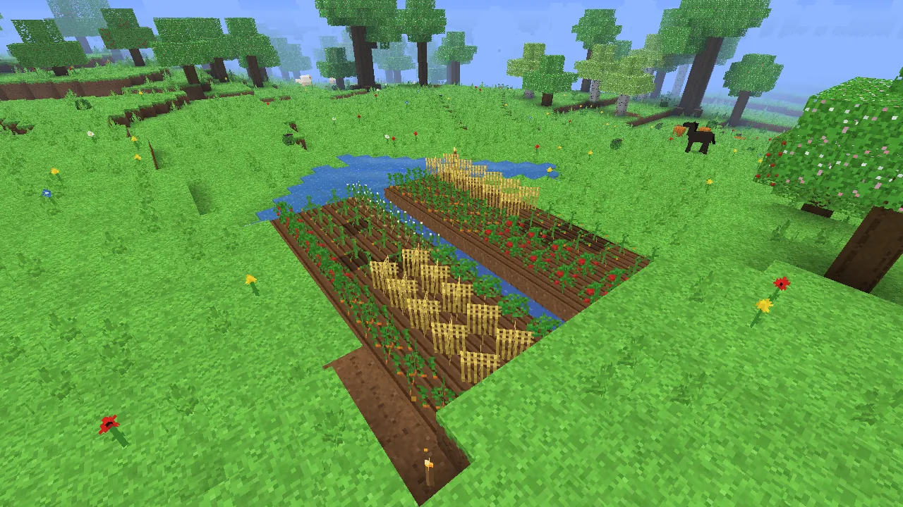
Ekmeğe giden yol
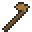
Çapa→ Tohum→
Tohum→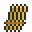
3Buğday→EkmekÖnce çapa ile toprağı tarla toprağına çevirin; tohum başka bir şeye ekilmez. Uzun otları kırınca tohum düşer, çiftçi köylüler de tohum satar. Kışın açıktaki ekinler don yüzünden geriler, yakına bir ışık ya da ısı kaynağı koyarsanız korunur.
- Buğday, havuç, patates, soğan, domates, biber, mısır, lahana, pamuk, çilek, karpuz, balkabağı, şeker kamışı.
- Her ekinin sevdiği bir mevsim var. Çoğu kışın büyümez; soğan ve lahana kışın yavaş da olsa büyür. Eşyanın açıklamasında yazıyor.
- Domates, biber ve çilek olgunlaşınca sağ tıkla toplanır, bitki kalır ve tekrar ürün verir.
- Kemik tozu büyümeyi hızlandırır. Kompost Kutusu'na bitki artıklarını atarsanız gübre verir, o da aynı işi görür.
- Elma, kiraz, portakal ve zeytin ağaçları kendiliğinden yetişir. Fidanını dikip kendi bahçenizi kurabilirsiniz.
Mutfakta Değirmen Taşı ile un, kıyma ve pul biber öğütülür. Tandır fırın gibi çalışır. Pide, mantı, lahmacun, börek, sütlaç gibi yemekler hem çok doyurur hem de etki verir. Yemek yaptıkça aşçılık seviyeniz yükselir, etkiler uzar. Seviyenizi ve tarifleri Tarif Defteri'nden görebilirsiniz.
Hayvancılık için iki aynı hayvanı uygun yemle besleyin, yavru olur. Beslediğiniz hayvanlar kaybolmaz. Kovayla inekten süt sağabilir, makasla koyun kırkabilirsiniz; yün birkaç dakikada yeniden uzar.
Elektrik
Elektrik biraz uğraştırır ama bir kere kurunca bırakamazsınız.
Üretmek
- Güneş paneli: Gündüz çalışır, üstü açık olmalı. Bulut ve yağmurda düşer.
- Rüzgâr türbini: Yükseğe kurulduğunda daha çok üretir.
- Su türbini: Yanındaki her su bloğu için üretir, gece gündüz çalışır. Kışın verimi yarıya düşer.
- Jeneratör: Kömür ya da odun yakar. Her yerde çalışır ama yakıt ister.
En basit devre
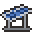
Güneş Paneli→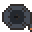
Kablo→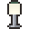
LambaBağlamak
Her cihazın mavi giriş ve turuncu çıkış soketi var. Güç kabloyla çıkıştan girişe, tek yönde akar. Elinizde kabloyla bir sokete tıklayıp diğerine tıklamanız yeterli. Dağıtıcı gücü üçe böler, birleştirici iki kaynağı tek hatta toplar. Artan enerji bataryalarda birikir; küçük, orta ve büyük olmak üzere üç boy batarya var.
Elektrikle çalışanlar: lambalar, ısıtıcı, elektrikli ocak, otomatik taret, hareket algılayıcı ve sulama fıskiyesi. Şalterle devreyi kapatıp açabilirsiniz.
Büyü ve başarımlar
Büyü Masası elmas, parıltı kristali ve kesme taştan yapılır. Aletlere, silahlara ve zırhlara deneyim seviyesi karşılığında büyü eklenir. Deneyimi canavar öldürerek, maden kazarak ve görev yaparak kazanırsınız. Büyülemek bir de parıltı kristali ister. Örste yıpranmış eşyaları onarabilir, aynı türden iki eşyayı birleştirebilirsiniz; eşit seviyeli iki büyü birleşince bir seviye yükselir.
Başarımları L ile görebilirsiniz. Bazıları kolay, bazıları gerçekten uğraştırıyor. Kanlı Ay'ı sağ çıkarmak gibi.
Eve Dönüş Tılsımı sizi son kullandığınız yatağa ışınlar. Uzak bir keşifte çantanız dolduğunda can kurtarır.
Çok oyunculu
Dünyanın sahibi oyunu açar, duraklatma menüsünden Dünyayı Arkadaşlara Aç der. Ekranda 6 karakterlik bir kod çıkar. Diğerleri ana menüden Çok Oyunculu ekranına gidip adını ve kodu yazar. En fazla 8 kişi olabilirsiniz.
- Bağlantı oyuncular arasında doğrudan kurulur, ayrı bir sunucu yok. Dünya, açan kişinin tarayıcısında kaydedilir.
- Envanter, can, görevler ve köy itibarı herkesin kendine ait. Aynı adla tekrar girerseniz kaldığınız yerden devam edersiniz.
- Gece, herkes yatağa yatınca geçer.
- Sohbet T, oyuncu listesi Tab.
Ayarlar ve performans
Oyun ilk açılışta bilgisayarınıza göre bir grafik ayarı seçer. Takılma varsa sırayla şunları deneyin:
- Ayarlar > Görüntü bölümünde görüş mesafesini düşürün. En büyük fark burada.
- Grafik ön ayarını bir kademe indirin. Telefon ve zayıf tabletler için ayrı bir Telefon ön ayarı var; dokunmatik cihazlarda ilk açılışta kendiliğinden seçilir.
- Çözünürlüğü Otomatik'te bırakın; kare hızı düşünce kendiliğinden ayarlanır. Yine olmuyorsa elle indirin.
- Tarayıcıda başka ağır sekmeler açıksa kapatın.
Fare hassasiyeti, görüş açısı, ses düzeyleri, mini harita, öğretici ve ipuçları da Ayarlar'da. Erişilebilirlik bölümünde yazı boyutu, renk körlüğü düzeltmesi (kırmızı, yeşil ya da maviyi ayırt etmekte güçlük için), kamera sallanması ve ekran sarsıntısıyla parlamaları azaltma seçenekleri var. Oyun her dünyanın son üç kopyasını ayrıca saklar; kayıt bir sebeple bozulursa dünya en son sağlam kopyadan açılır. Dünyalarınızı Dünyalar ekranındaki Yedekle düğmesiyle tek bir dosya olarak indirip başka bir bilgisayarda Yedekten Yükle ile açabilirsiniz.
Geliştirici konsolu
Yeni dünya oluştururken Komutlara izin ver seçeneğini işaretlediyseniz F8 ile konsol açılır. İşaretlemediyseniz sadece bilgi komutları çalışır (konum, tohum, fps gibi).
Birkaç işe yarar komut:
| Komut | Ne yapar |
|---|---|
yardim | Bütün komutları listeler |
tohum | Dünyanın tohumunu yazar |
isinla koy | En yakın köye ışınlar. liman, zindan, batik, ada da olur |
isinla x y z | Koordinata ışınlar |
zaman | Saati değiştirir |
hava | Havayı değiştirir |
Komut yazmak istemeyenler için F9 ile açılan bir pencere var; aynı işleri düğmelerle yapıyor. Konsolda Tab komutu tamamlar, ok tuşlarıyla eski komutlara dönersiniz.
Eksik ya da yanlış bir şey gördüyseniz haber verin, düzeltelim. Güncel değişiklikler için güncellemeler sayfasına bakabilirsiniz.